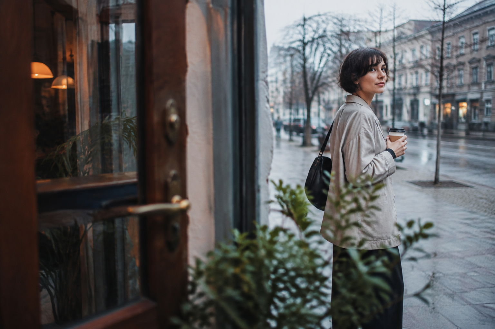
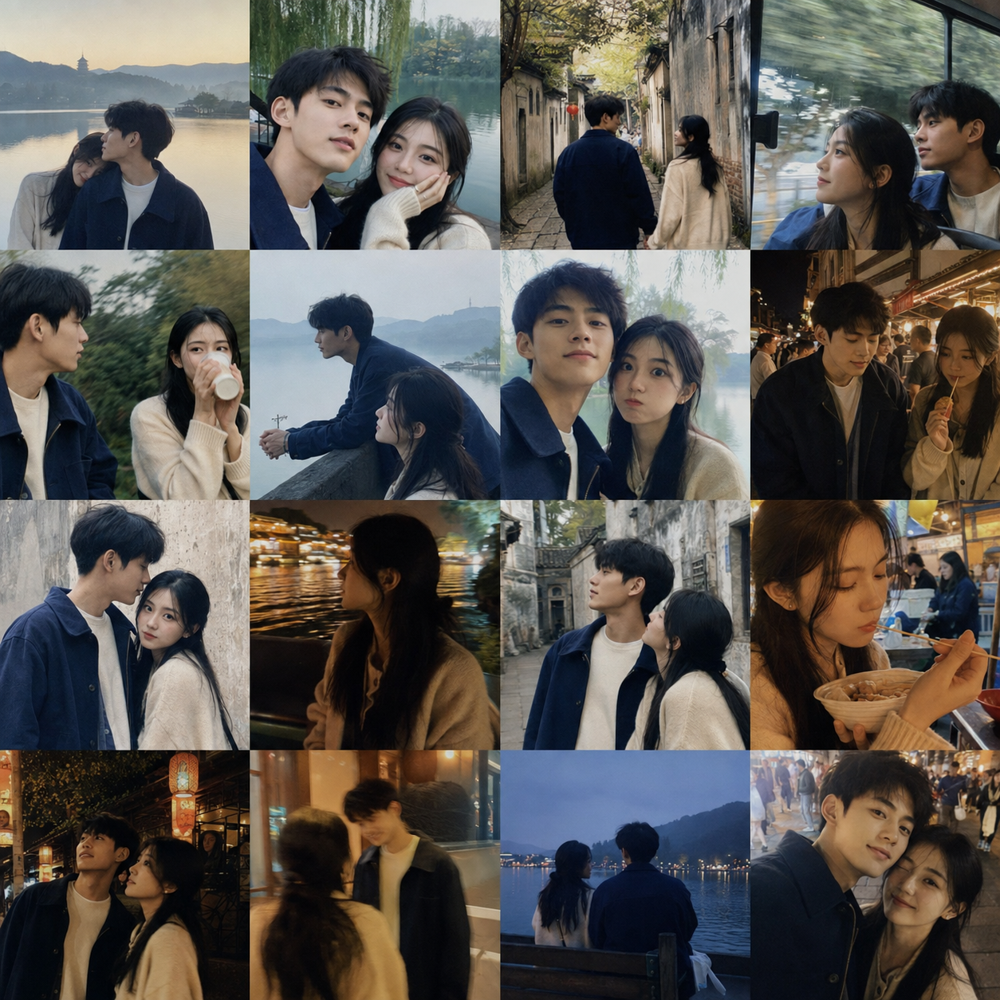

Portrait design · IP injectable
真实抓拍人像
把 IP 注入真实生活摄影语境，重点控制场景、动作、焦段、机位、前景遮挡和自然光线，避免影楼摆拍与 AI 假人感。
最短用法
使用 $vibeshot-candid-photography，用牙仔生成 3 组真实抓拍人像，场景：杭州街头，画幅：9:16，只给提示词。
两个可被 IP 注入的视觉设计 Skill：先指定牙仔、阿宝等角色，再让 Skill 负责摄影方向或旅行叙事。它们不是 IP 设计 Skill，不会替你创建角色。

把 IP 注入真实生活摄影语境，重点控制场景、动作、焦段、机位、前景遮挡和自然光线，避免影楼摆拍与 AI 假人感。
使用 $vibeshot-candid-photography，用牙仔生成 3 组真实抓拍人像，场景：杭州街头，画幅：9:16，只给提示词。

把 IP 作为旅行叙事中的角色，生成 4×4 旅行照片墙、四张记忆图、男女角色卡、四段视频提示词和后续拼接方案。
使用 $virtual-couple-travel-vlog，把牙仔作为旅行伙伴，制作一对虚拟情侣在杭州旅行的照片墙和 Vlog 工作流。